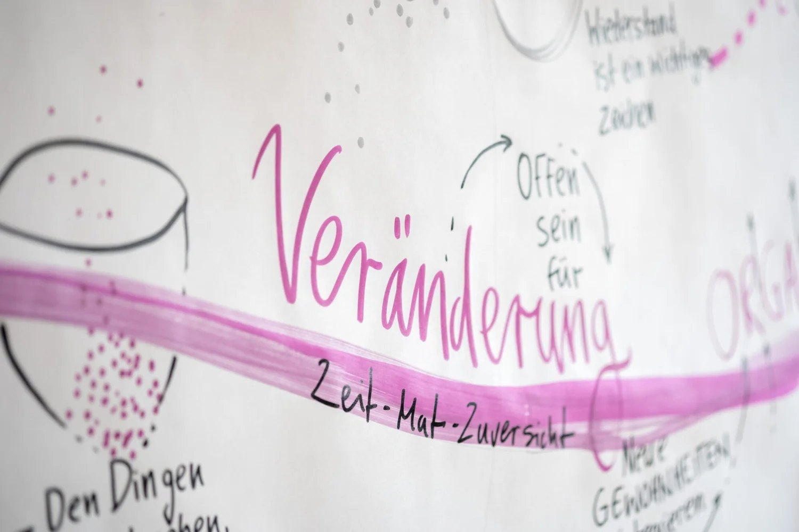
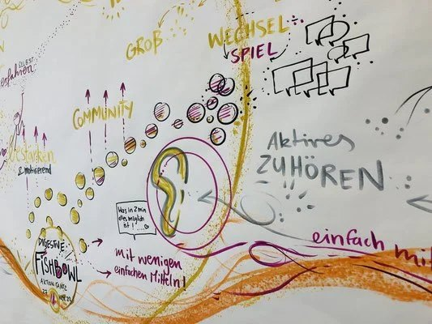
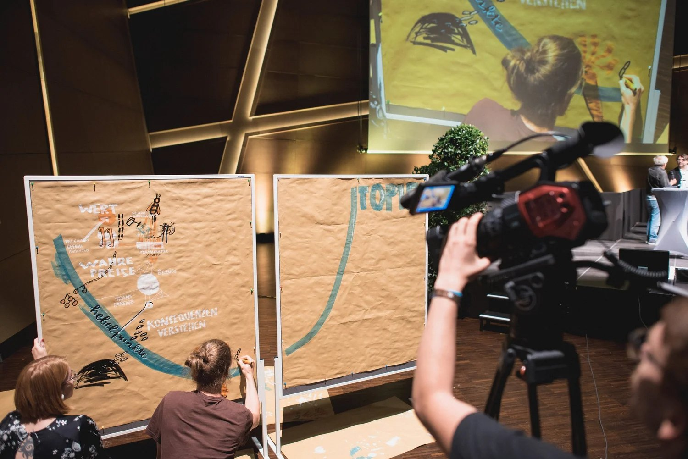
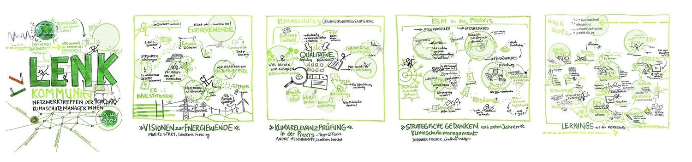
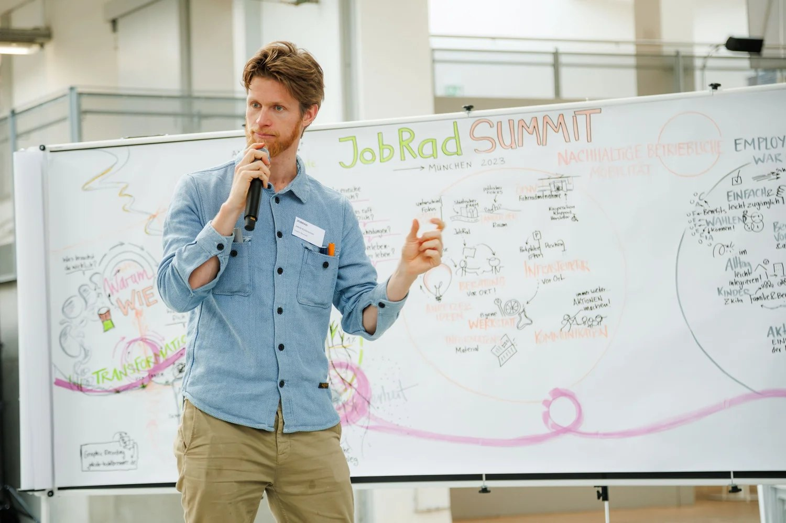
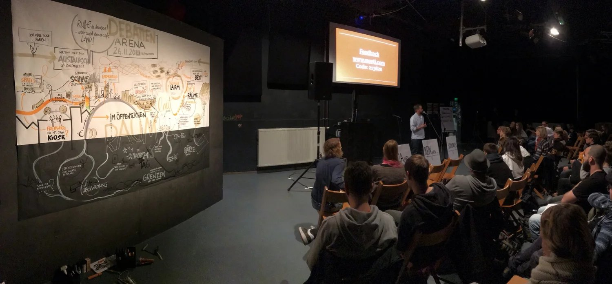
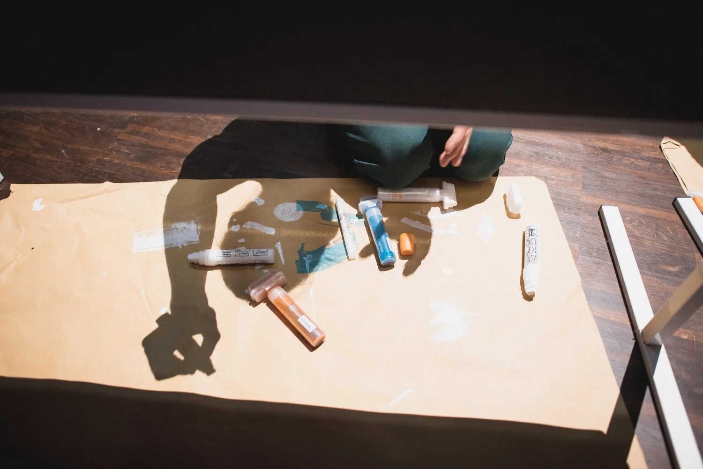
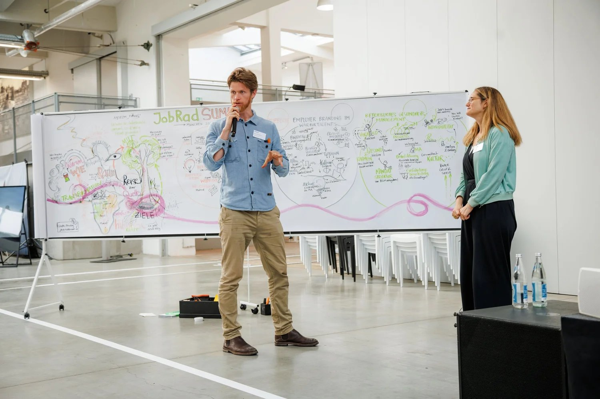
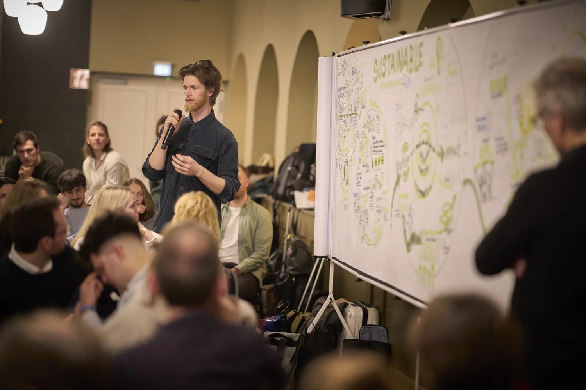
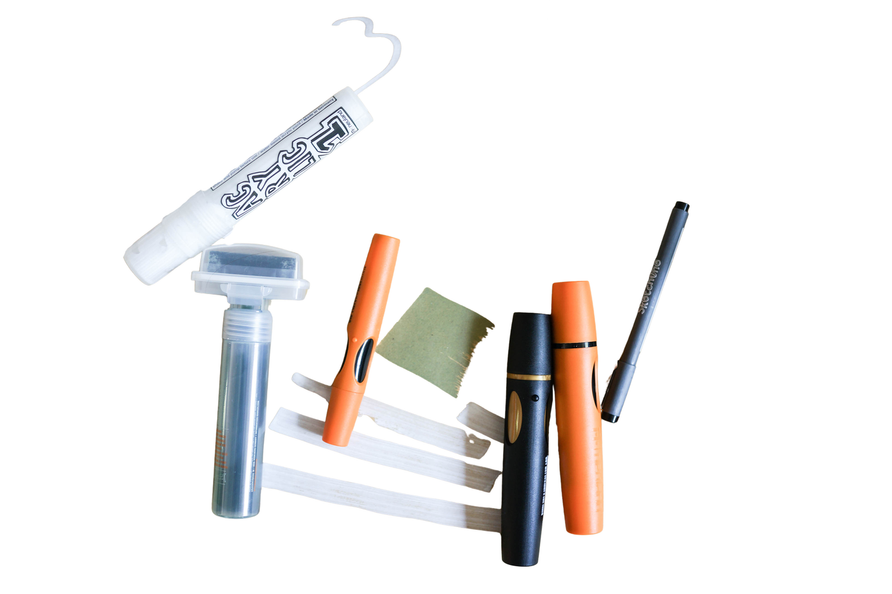

Strategie, die ihr sehen könnt
Aus abstrakter Strategie wird eine greifbare Landkarte, an der Teams gemeinsam weiterarbeiten. Für Strategietage, Kick-offs, Veränderungsprozesse und Netzwerktreffen in Freiburg, Baden-Württemberg und Süddeutschland.

Wenn eine Strategie im Kopf klar ist, aber im Team nicht ankommt
Die abstrakte Strategie wird zur greifbaren Landkarte. Der Konflikt zeigt sich als kreatives Spannungsfeld. Die Vision nimmt Gestalt an – emotional spürbar, visuell verankert.
Strategische Visualisierung ist Graphic Recording mit einer anderen Aufgabe: Das Bild dokumentiert nicht nur, was gesagt wurde. Es hilft einer Gruppe, sich über Richtung, Prioritäten und nächste Schritte zu verständigen.
Es geht um Tiefe, nicht um Brainstorming-Design.
Wofür strategische Visualisierung passt
Ob Teamworkshop, Kick-off Event oder Netzwerktreffen – gemeinsam finden wir den richtigen visuellen Ansatz.
Strategie- und Visionstage
Die Strategie wird als Landkarte sichtbar. Alle sehen dasselbe Bild und können daran anknüpfen.
Veränderungsprozesse
Das Bild hält Stimmungen, Wendepunkte und unausgesprochene Botschaften fest und wird zum Anker für die Zeit danach.
Konferenzen und Summits
Perspektiven vieler Beteiligter fließen in ein gemeinsames Gesamtbild, zum Beispiel beim JobRad Summit in München.
Visualisierungs-Workshops im Team
Gruppen von 5 bis etwa 30 Personen lernen einen intuitiven Zugang zum Zeichnen und machen eigene Themen selbst sichtbar.
Ich ernte von Anfang an mit
Wie ein Landwirt plane ich schon vor dem Workshop, was wir ernten wollen: Welche Erkenntnisse müssen sichtbar bleiben? Welche Energie soll in den Alltag fließen? Welche Entscheidungen brauchen Verbindlichkeit?
Sichtbare Ernte
Visuelle Landkarten und Dokumentationen, die an der Wand hängen.
Spürbare Ernte
Die Energie und Verbindung, die in der Organisation bleibt.
Individuelle Ernte
Was jeder Einzelne für sich mitnimmt und umsetzt.
Kollektive Ernte
Was die Organisation als Ganzes gewinnt und verändert.
So entsteht das Bild
Ich bin von Anfang an dabei. Nicht als stiller Beobachter, sondern als Teil des Prozesses. Ich spüre die Energie, die Spannungen, die Wendepunkte.
Während ihr sprecht, übersetze ich. Abstrakte Gedanken werden zu greifbaren Metaphern. Komplexe Zusammenhänge zu klaren Strukturen. Die Gruppendynamik zum Bildaufbau.
Das Bild wächst mit euch. Menschen stoppen mitten im Meeting: „Genau DAS ist es!“ Das Visuelle wird zum Katalysator für tiefere Einsichten.
Die Essenz bleibt. Nach dem Workshop bekommt ihr hochauflösende Aufnahmen. Die Bilder werden zu Ankerpunkten eurer gemeinsamen Reise.

Strategische Bilder aus der Praxis




Ausgewählte Einsätze

JobRad München
„Visualisierung schafft eine gemeinsame Sprache für Veränderung“

sustainable AG Teamentwicklung
„Kollektive Formate machen Teamkultur spürbar und lebendig.“

Visualisierungsworkshop Freiburg VHS
„Jeder Mensch kann zeichnen – und dadurch sichtbar machen, was wirkt.“

Junges Führungskolleg Freiburg Schauinsland
„Führung beginnt mit Selbstführung und Zuhören.“
Utopie-Konferenz
„Utopien werden lebendig, wenn wir sie gemeinsam gestalten und sichtbar machen.“

Siepmann Werke Führungsteam Entwicklung
„Werte werden stark, wenn Menschen sie selbst gestalten und leben.“
Fragen und Antworten
Bekommen wir digitale Scans und wie ist es mit den Bildrechten?
Ja, alle Bildrechte liegen im Nachgang bei euch. Ihr erhaltet von mir aufbereitete digitale Scans direkt nach der Veranstaltung – zur freien Verwendung in Präsentationen, Berichten oder Social Media. Visualisierungen sind dafür da, geteilt und gesehen zu werden. Ich freue mich, wenn ihr meinen Namen und meine Website mit anführt.
Arbeitest du auch digital?
Ja, ich arbeite auch digital – zum Beispiel über Zoom, Teams oder Google Meet. Auf dem iPad visualisiere ich live und integriere die Zeichnungen ideal in Online-Workshops, Summits oder Konferenzen. Besonders wirkungsvoll ist die Kombination mit Miro oder MURAL Boards, denn so entsteht ein gemeinsamer Raum, in dem Visualisierung eine wichtige Lücke der Kommunikation schließt, die im Online-Format oft verloren geht.
Gibst du auch Visualisierungs-Workshops?
Ja, ich biete Visualisierungs-Workshops für Gruppen von 5 bis etwa 30 Personen an. Dabei geht es vor allem um einen intuitiven Zugang zum Zeichnen: mit einfachen Materialien, klaren Strukturen und der Möglichkeit, innere Themen sichtbar zu machen. So entsteht Klarheit, Kreativität und oft auch eine neue Form der Reflexion. Meine Workshops eignen sich besonders gut für Teambuilding, persönliche Entwicklung und für die Frage, was im jeweiligen Kontext wirklich wesentlich ist. Wenn du Interesse hast, melde dich gerne – gemeinsam finden wir das passende Format.